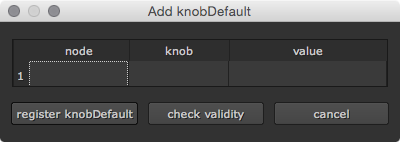
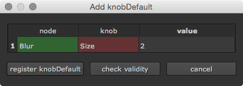
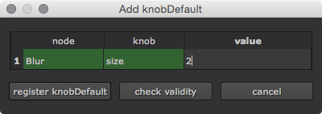
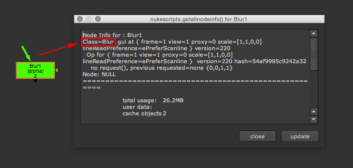
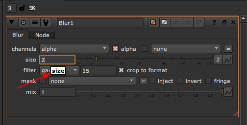

Adding a new knob default¶
There are three ways to create new knob defaults.
1) Using the Add knobDefault window¶
When clicking the blue add new knobDefault button at the bottom left of the default main window the “Add knobDefault” window appears. This window lets you create new knobDefaults.
Simply type in the node class, the knob name and the default value that you would like to set. Before adding the knob default make sure to click the check validity button. This will check if the node name and the knob name are correct and prevents you from creating knob defaults that are invalid:
In this example the knob name is invalid. The knob name should be lowercase, so ‘size’.
When everything is correct click the register knobDefault button. The knob default will be added to the list. You don’t need to restart Nuke, the knob default is immediately set. You can always edit or delete any knob default from the list.
How do I know the exact node- and knob name?¶
To find out the node name create the node, select it and press I. In the upcoming window you will see the node class.
To find out the knob name open the node in the properties bin and hover over the knob to change. The name in bold is the internal knob name.
